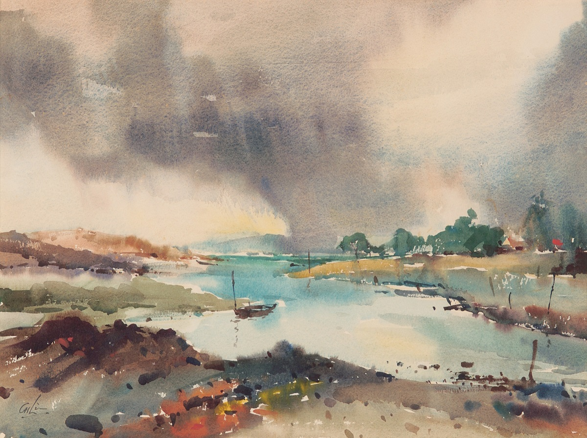
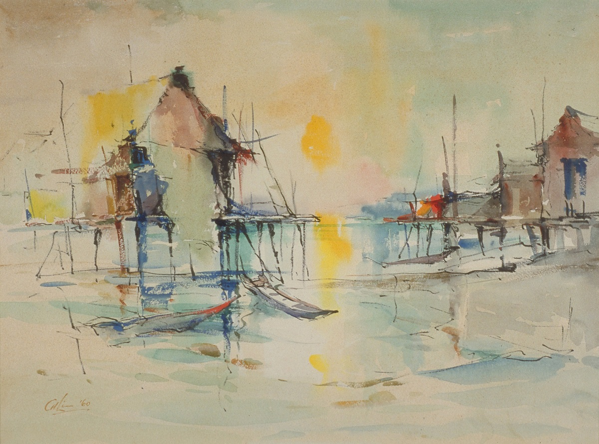
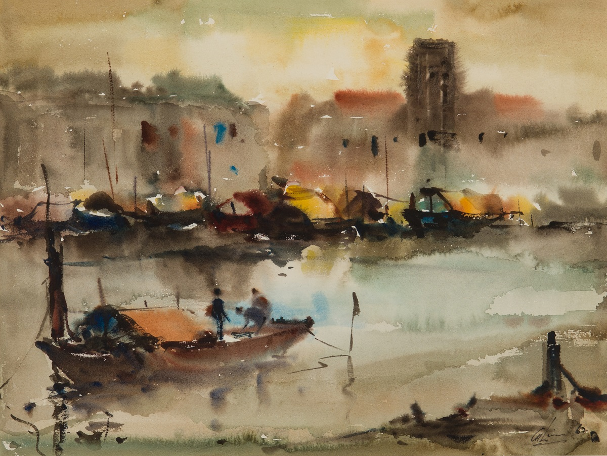
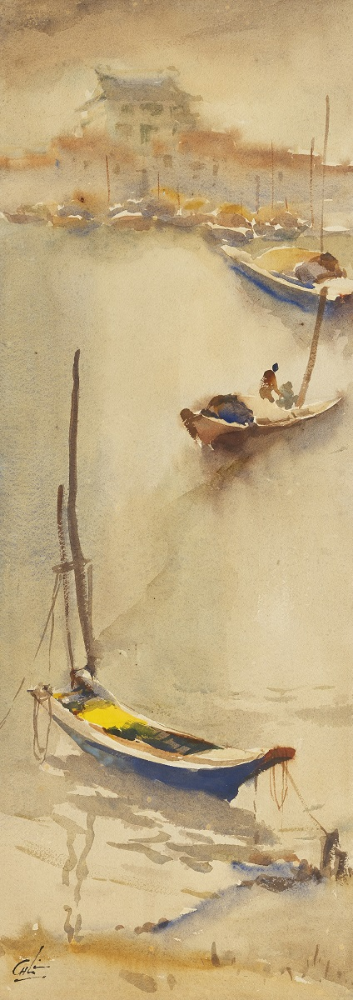
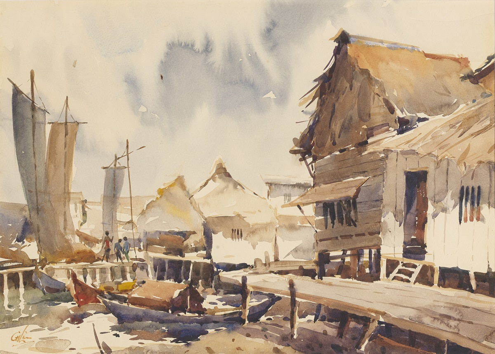
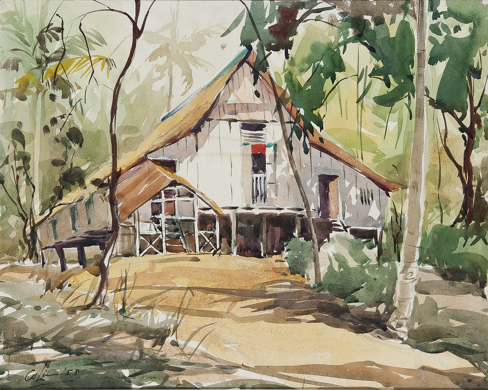
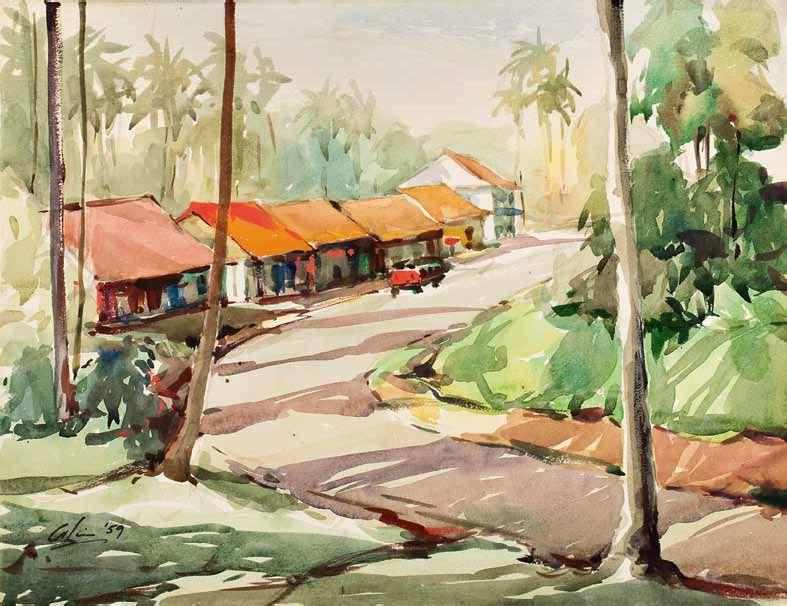
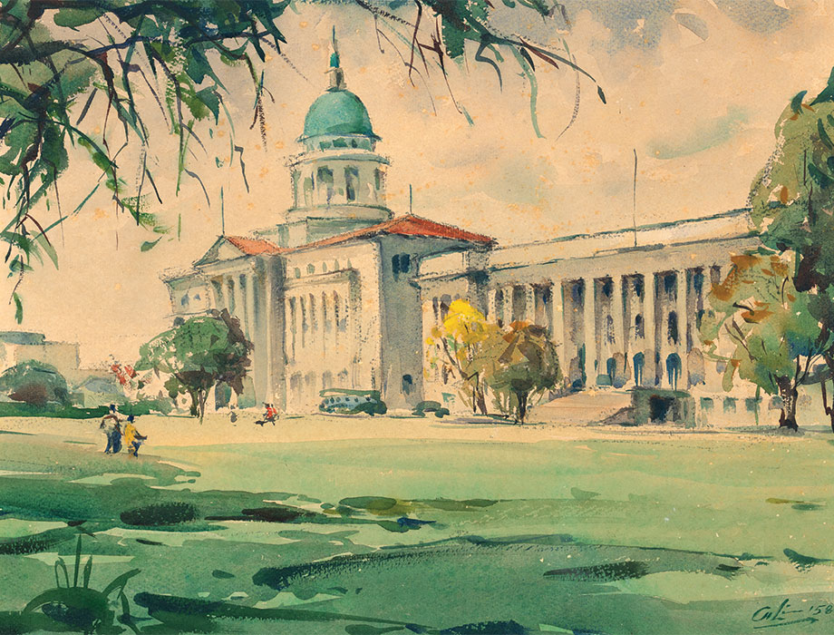
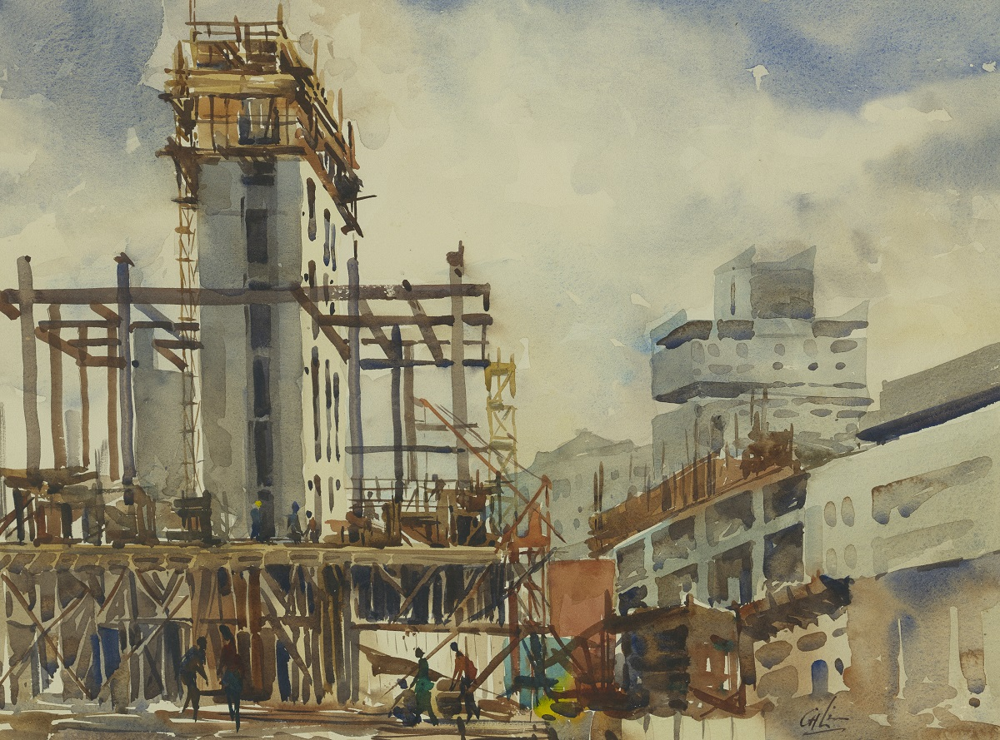

林清河 Lim Cheng Hoe – 河口 The Estuary
文章目录
 图1. Lim Cheng Hoe, 河口 The Estuary, 1970年, 水彩, 38x51cm, National Heritage Board, Singapore
林清河出生于中国厦门，7岁时随家人移民到新加坡。 他对于绘画纯粹源于热爱，从小就爱涂涂画画，中学时代他更是迷上水彩画。 在林清河青年时代的新加坡，靠画画无法支撑生计，他完成学业后选择了一份有保障的工作，并持续到退休。
尽管无法全身心投入到热爱的艺术中，林清河也并未停止对艺术的学习与练习。 他在中学毕业后持续向恩师Richard Walker学习水彩技艺，工作后的周末他就带上画笔颜料，将大自然润入画纸。
林清河的水彩画大量描绘的是新加坡自然景观，河流就像新加坡的太阳一样，是每幅作品的灵；水彩的形式与河流的灵动和谐相融，让人想跃入画中坐于河畔。
《河口》（图1）中河流映着天空的蓝，而远处的天边却飘着淡淡的灰色水雾，渔夫从天空中预见到大雨将至，将渔船停泊河口。
林清河其他河流的作品（图2~图5），每张的画幅都不大，水彩也是偏淡，甚至着笔寥寥，可这简单的方法足以表达他对新加坡河流的热爱、对生活的热情。
 图2. Lim Cheng Hoe, Nocturne, 1960年, 水彩, 39.4x52.4cm, National Gallery Singapore
 图3. Lim Cheng Hoe, 新加坡河 Singapore River, 1962年, 水彩, 33x43cm, National Gallery Singapore
 图4. Lim Cheng Hoe, Boats by the Waterfront, 1965年, 水彩, 71.3x25.3cm, 私人收藏
 图5. Lim Cheng Hoe, Attap and Nets at Kukup, 1972年, 水彩, 37x51.5cm, 私人收藏
六十年代之前的新加坡，居民的环境简朴，海边大多是木制的船屋（图6）；到了六七十年代，在山林小道旁开始有了炊烟人家（图7），大规模的工业建设也让新加坡的面貌逐渐焕新（图8~图9），这些历史将通过一幅幅作品传递给后代。
 图6. Lim Cheng Hoe, Kampung in Tanah Merah, 1958年, 水彩, 39x49.5cm, 私人收藏
 图7. Lim Cheng Hoe, Village Town near Seremban, 1959年, 水彩, 35x45cm, 私人收藏
 图8. Lim Cheng Hoe, Supreme Court and City Hall, 1958年, 水彩, 32.6×42.8cm, 私人收藏
 图9. Lim Cheng Hoe, 无题 (Construction Site in the City), 1970年, 水彩, 38.5x51.5cm, National Gallery Singapore
参考： [1] 林清河展览作品，https://www.nationalgallery.sg/exhibitions/lim-cheng-hoe-painting-singapore/artwork-highlights